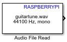

Read audio frames from an audio file
Simulink Support Package for Raspberry Pi Hardware

The Audio File Read block copies an audio source file and outputs the audio data into your model. The audio data can be played on a loop multiple times, as specified by the Number of times to play file parameter. The audio data can consist of one or more channels, C. A mono audio source file has only one channel, and a stereo audio source file has two channels. The audio data is output from the block as N consecutive samples of audio data.
The Audio File Read block determines the sample time (Ts) from the samples per audio channel (N) and sampling frequency (Fs) of the selected audio file.
Ts = N / Fs
For example, if N is 4410 samples and Fs is 44,100 Hz, the block sample time is 4410/44,100 = 0.1 seconds.
N is the value that you specify in the Samples per audio channel (N) parameter. Fs of the selected audio file is automatically displayed on the block when you browse the file using the File name parameter.